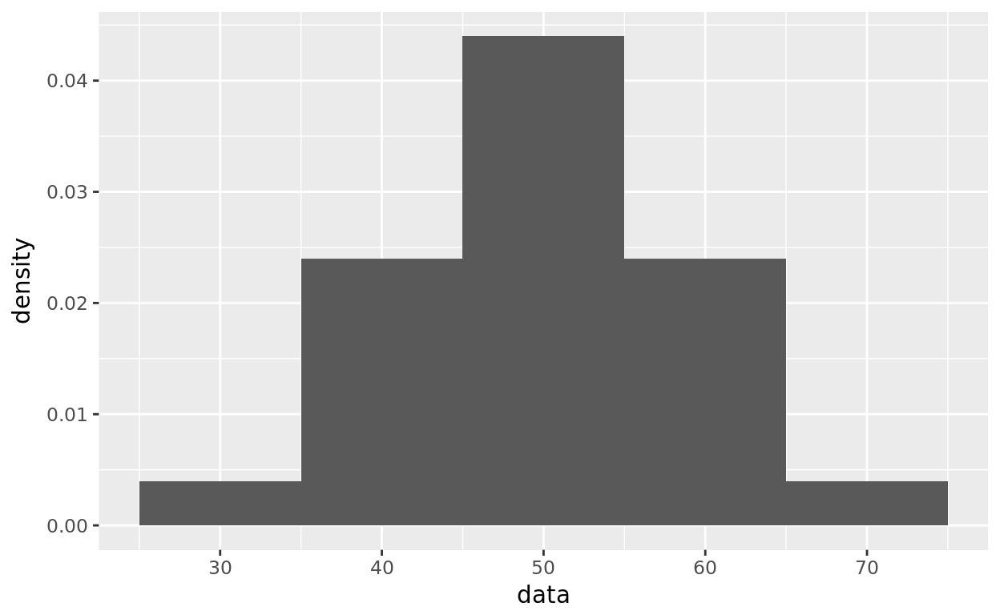

library(dplyr)
library(ggplot2)This solves problem 1 page 93 in FPP using R.
data <- c(39,41,47,58,65,37,37,49,56,59,62,36,48,52,64,29,44,47,49,52,53,54,72,50,50)library(dplyr)
library(ggplot2)
data <- c(39,41,47,58,65,37,37,49,56,59,62,36,48,52,64,29,44,47,49,52,53,54,72,50,50)Find the mean and standard deviation of the data using the functions mean() and sd(). Assign these numbers the name avg and std
avg <- mean(data)
avg
std <- sd(data)
stdLets check that this data is approximately normal by making a histogram. You will learn to plot with ggplot() very soon. 
Find the numbers avg-1.25*std and avg+1.25*std. Assign these numbers the name low and high.
library(dplyr)
library(ggplot2)
data <- c(39,41,47,58,65,37,37,49,56,59,62,36,48,52,64,29,44,47,49,52,53,54,72,50,50)
avg <- mean(data)
std <- sd(data)
low <- avg-1.25*std
high <- avg+1.25*stdlow <- avg-1.25*std
low
high <- avg+1.25*std
highAssuming the data is normally distributed find the area between low and high.
library(dplyr)
library(ggplot2)
data <- c(39,41,47,58,65,37,37,49,56,59,62,36,48,52,64,29,44,47,49,52,53,54,72,50,50)
avg <- mean(data)
std <- sd(data)
low <- avg-1.25*std
high <- avg+1.25*std#modify the following
pnorm(__fill_in__)- pnorm(__fill_in__)pnorm ((high-avg)/std) - pnorm((low-avg)/std)So we expect 78.87 percent of the data to be within 1.25 SD of the mean. We can write the following expression to find how many scores we are expecting:
.7887*length(data) #the proportion of values between low and high times the total number of scores.## [1] 19.7175We can count how many scores between low and high using vector subsetting.
library(dplyr)
library(ggplot2)
data <- c(39,41,47,58,65,37,37,49,56,59,62,36,48,52,64,29,44,47,49,52,53,54,72,50,50)
avg <- mean(data)
std <- sd(data)
low <- avg-1.25*std
high <- avg+1.25*stdlength().
data[data>low & data<high] #values of data between low and high
length(data[data>low & data<high]) #the number of scores between low and high18 values are between low and high. Pretty close to 19.71.